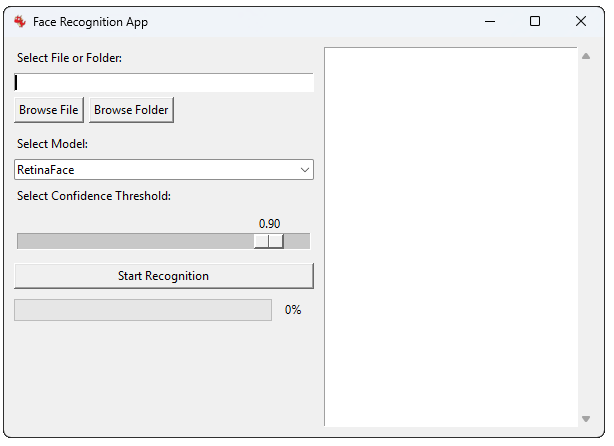

Advanced Options
Batch Processing
The Face Recognition Toolbox supports batch processing of multiple files, allowing you to process large datasets efficiently:
How to Use Batch Processing
- Select "Folder" instead of "File" in the input selection section.
- Browse and select the folder containing your images and/or videos.
- Choose your preferred detection model and adjust the confidence threshold.
- Click "Start Detection" to begin processing all supported files in the folder.
- The application will create a single results folder containing:
- Processed images for all files
- A comprehensive CSV file with all detection data
- A summary CSV with statistics for all processed files

Select a folder for batch processing
Performance Considerations
When processing large batches of files, consider the following tips to optimize performance:
- Model Selection: For faster processing, choose YOLOv8n-face. For higher accuracy, use YOLOv8l-face.
- Video Processing: Processing videos requires more time than images. Consider your hardware capabilities when batch processing multiple video files.
- Memory Usage: The application may use significant memory when processing high-resolution images or videos. Close other memory-intensive applications for best performance.